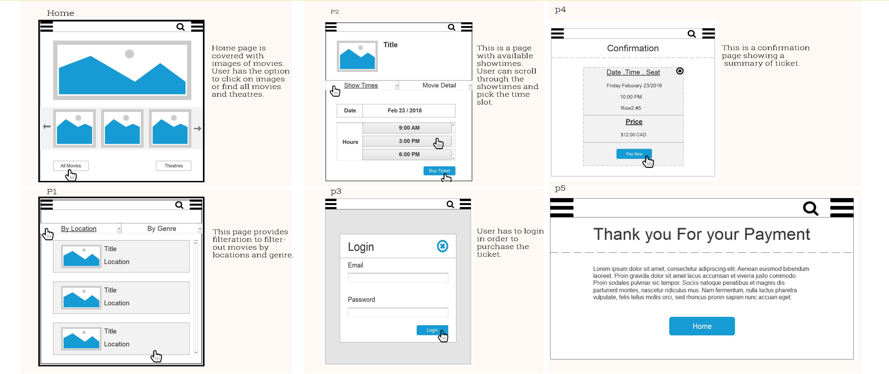

IAT-334: Interface Design
IAT 334 Interface Design, is a design course offered by SFU interactive arts and technology program. It focuses on user interface, user experience and theory of design principles. I took the course on Spring 2018. The course has three major projects and weekly assignments. The first project is individual and the last two projects are done in groups of 2-3. First project is about redesigning of social media such as Facebook, Twitter. The second project is about improving an existing Android/Ios application by introducing new features. Final project asks students to come up with an entirely new application idea, design its interface and build the entire app mockup.
Our team came up with an idea of an app which allows locals to post/suggest less visited (hidden) places in their city to visitors who are looking for unique places that are not known to many.
The app is called “HiddenGems”, it allows locals and visitors to post, review and upload pictures of places. The app categorizes activities and places. For example if the visitor is looking for a camping place, she can go to camping category.
Re-design of social media websites
In this project we were asked to make a mock of social networking website. After several sketches, I came up with a minimalist design. I devided contents in grids of three. Left side
is live preview of upcoming events, center is the posts and right side is list of the friends. The reason for this design is to avoid Confusion and to not overwhel users with too many
contents. For the color scheme I chose to go with dark blue for background, red for headlines and white for texts. I chose red for heading to direct user’s attention to content.
Also use of white text on black helps the contents to be more readable.

Add two non-existing features to "Bumble" app
In this project we were asked to add two non-existing features to an application, in our case “Bumble”. My partner and I researched to find the most needed feature. We came up
with the following missing features:
1-Ability to hide profile from FaceBook friends.
2-Adding story

Ordering Cinema Ticket (Mockup App)
Wireframes of the app

High-fidelity of the app

Remake of canvas webpage
Done in Axure

Challenges
We faced a lot of challenges such as inability to agree on fixed schedule for meetings due to different course loads and work schedules.
Also none of us had mac computers at home, so we had to come to school to have access to mac design softwares such as sketch and principle.
Overcoming Chanllenges
We decided to do skype meeting two times per weeks to work on different parts of the project.
We divided the project into parts and roles. I chose to go with the overall design and interactio of the app because I like design in general and I thought that it would be a great opportunity for me to expand on my existing design skills and create a project which is worth putting on my portfolio. The other two members agreed on creating contents and presentations slides.
My Role
As I mentioned, I chose to design the whole project on my own. I started watching 8 hours tutorial to learn how to work with "principle" on MAC. My TA (Vidhi) recommended me to download “Google Trips” on my phone to get some inspiration. Using TA recommendations and watching lots of online tutorials, I was able to design the app on “sketch” and do the transitions and animation on “Principle”. I am very satisfied with the overall design of the app, and I believe it has so much potential.